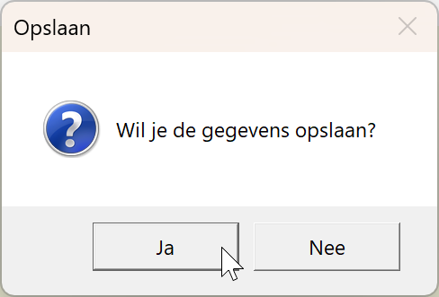
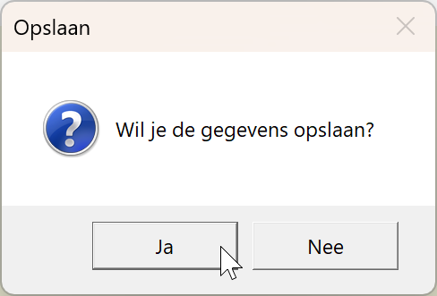

Een MessageBox is een dialoogvenster; voor een kort overzicht zie de online cursus. Let op: gebruik ze zo weinig mogelijk in praktijk, want ze zijn UI-blocking (je kan niks anders doen tot je zeg wegklikt).
Gebruik waar mogelijk liever een TextBlock voor de mededeling.
Let op! Voor deze opgave zul je ook in de code-behind moeten werken.
MessageBox met de vraag te bevestigenMessageBox met de bevestiging dat het opgeslagen is